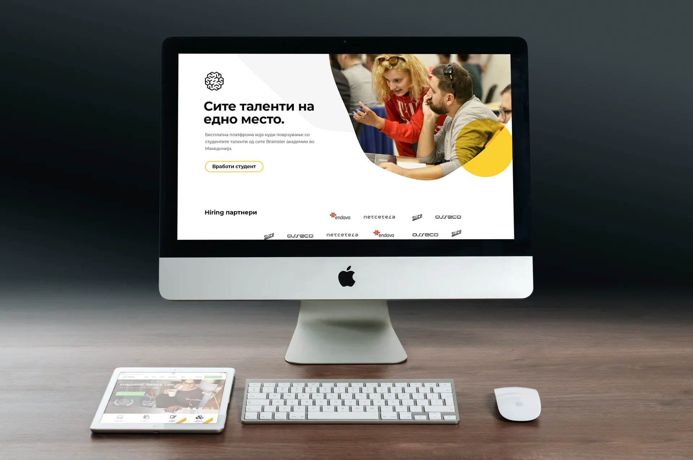
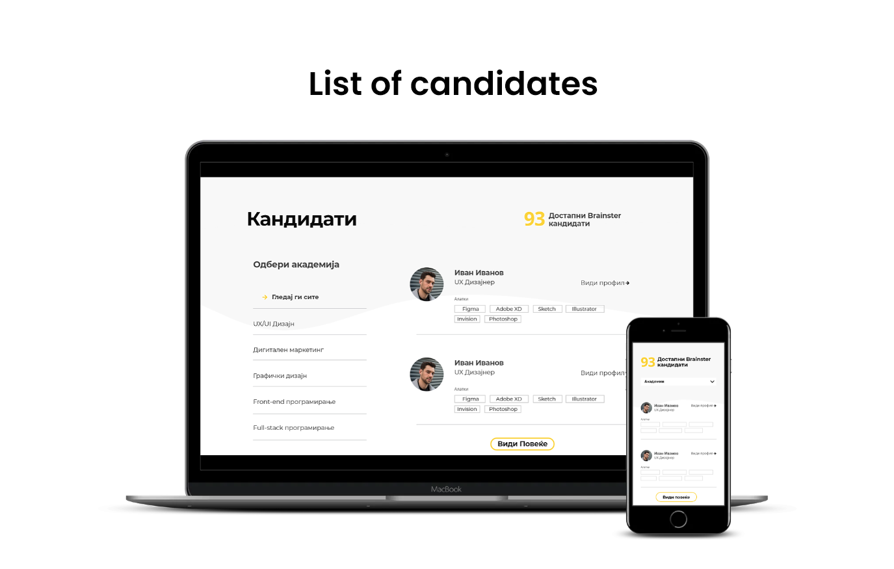
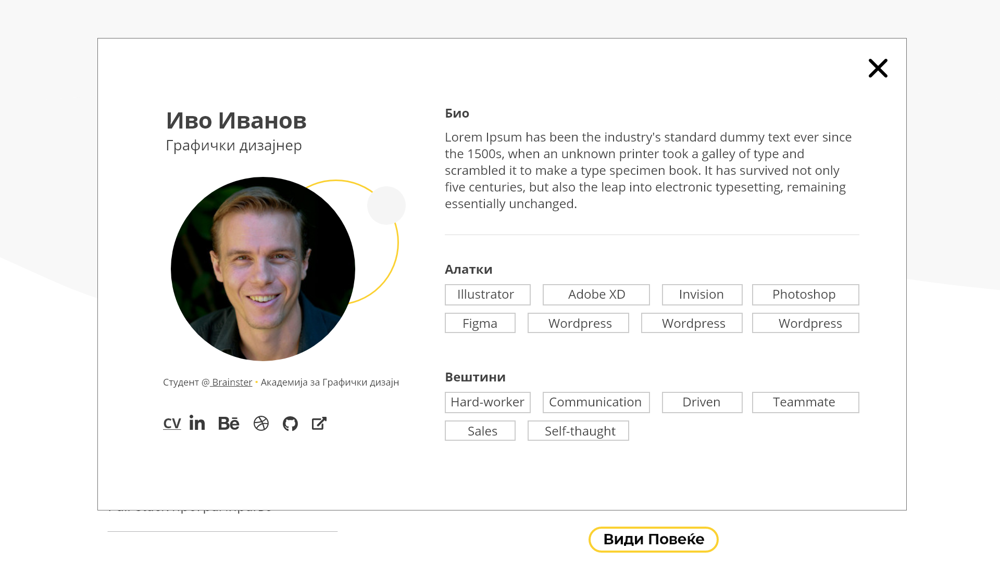
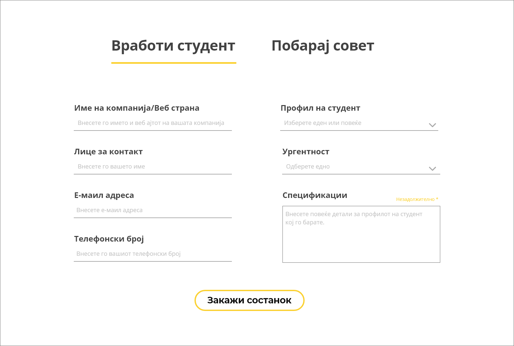
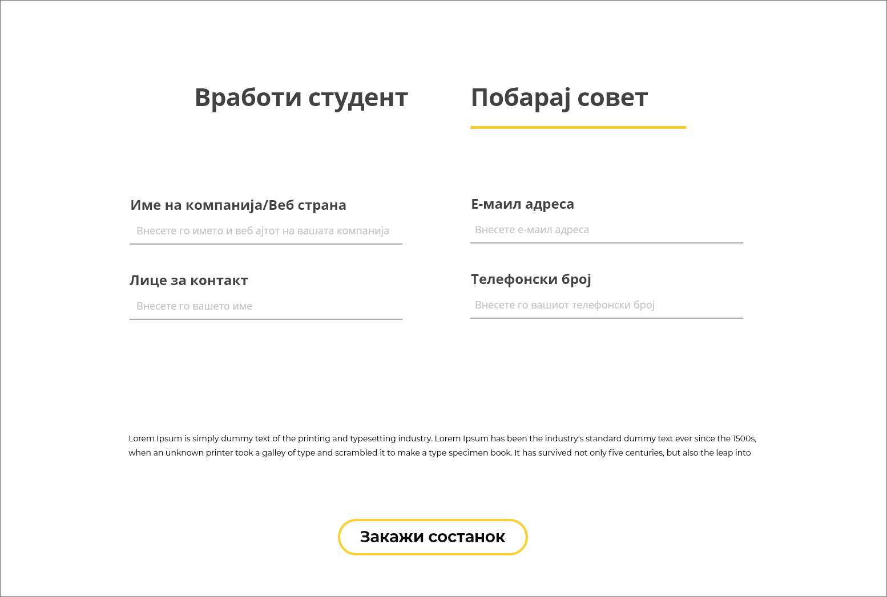

The main goal for this project is to simplify the whole process of finding
suitable
candidates, and create a site where learning partners can specify what kind of people they need for
a
certain position without having to schedule meetings beforehand. The concept of the site was to
include
some of Brainster’s alumni on the website in order to give the learning partners a general idea of
the
students and their qualities. The idea is for the learning partners to take a look at some of the
candidates and then schedule a meeting with the Brainster team in order to get recommendations that
will
be tailored to the company’s needs.

This project was a team effort between me and four other UX/UI designers. We held various meetings
in
which we discussed what the website should look like and what features it should have. When making
the
wireframes, we decided to do a list of candidates, instead of cards in order to make the site look
more
simple and cleaner. When someone clicks on a certain candidate, a new pop-up window with information
about the candidate and skills he/she has appears.


There are also two forms that learning partners can fill in: the first form, “Hire a student” is
used
when the partners know exactly what they are looking for, while the second form, “Ask for help” is
made
for partners who want to schedule a meeting with someone from the Brainster team and consult on what
kind of a student they are looking for.

